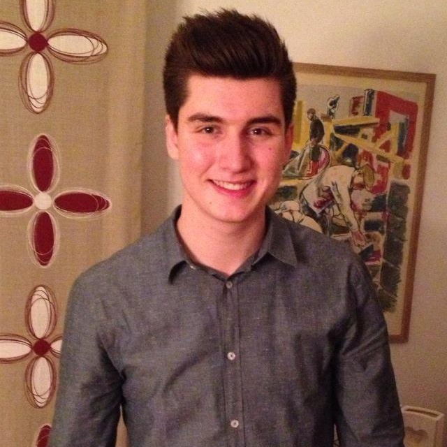

Hey, my name is Anton Larsson. I'm 20 years old and have just moved to Kalmar with my partner. For 20 years I have lived in Kristianstad with my family which I will talk about later. I'm here in Kalmar to study and I'll be studying Developer of Digital Services for 3 years. Furthermore in this text I will be talking a litle more about myself, my interests, family, my past and my future.
Today I dont have so many interests. Like I mentioned earlier I just moved here to Kalmar and I am still setteling down. Before I moved here I was training a lot, I was especially training karate. I've trained karate for around 14 years now and when I moved to Kalmar I had to quit my training but only for a small time. Now when I'm done moving and feel like I got control of my studying I'm going to start training again. I know here is a karate club in Kalmar and I've talked to my sensei back in Kristianstad and he was going to talk to the club and say that I might start training there, but I would still keep my own club mark. Otherwise I'm just like everybody else, I like to spend time with friends and also with my partner.
I got a pretty small family so it's not much to say about it. It's me, my mom, my dad and my sister. Now both me and my sister have moved out, so mom and dad is left alone in our house in Kristianstad. My sister did not move so far, she moved into central Kristianstad. She works at a grocery store and her apartment is walking distans from the store. My dad is a teacher in music. He have been a teacher for a really long time now. Even I had him in school and of course I got the highest grade. My mom works on a company called Malmberg, she has worked there for around 5 years I think. I think she really likes this job, it's much about organizing and it's really close to home so she can take the bike every day.
Always when this question appear I can't figure anything out about myself. What am I good at? Well I guess I'm good at karate, I got a black belt and I won the Swedish championship 2009 and to me that is pretty good. Otherwise I'm good at sports och computers. Then we have come to what I am bad at. I would say that I'm bad at concentrating, when I sit still or do something for a long time I can get restless and my concentration gets really poor.
Before I moved to Kalmar I studied social sciences for 3 years at Soderportgymnasiet in Kristianstad. It was a really good school, good teachers and an awsome class to study with.
I have had a couple of jobs in my life, some a bit better than others. When I was 15 I got my first job. The job was in the city so it was easy to take the bus there. It was a job as a cleaner in a stairhouse. Every thursday I went in to town to clean the corridors and stairs, and it only took me about 1h and I got 300kr every time I did it. And no, it was not a black job I got all the money at end of month and they even took tax. This job I had until I moved to Kalmar, so for 5 years and a bit more. My second and third job I got when I was 16. One of them was only a summer job, but who became a job for four summers in a row. The other job was a weekend job and also some days when I had a day off in school. The job that I had in the summers was as a garbage man and the other was in a hot dog stand. Both where really good jobs! And now finnaly I have come to my last job I had before the move and that was at Ica Maxi in Kristianstad. I only worked there for a summer but hopefully I get to work there next summer as well and maybe now at the winter holidays.
This is a really easy answer, no I have not!
I always wanted to learn about computers and a computereducation is really where I belong. When I serched for education I found many IT-educations, but also this education Developer of Digital Services and I directly applied for it! And now after 2 weeks of studying I'm already sure I'm going to belong in this class!
Finish my education.
Do something extraordinary
Travel
Do crazy stuff
Find a job
Settle down
First off all in my future I'm going to finish my education I have started and while I'm doing my studies I hopefully find some adventure coming my way.
My two subpoints is kind of as one. They both are extraordinary in it's own way and maybe I'll find them together somewhere.
1. Travle: With travle I mean to places I feel like you have to experience. Like Grand Canyon, China, USA and so on.
2. Do crazy stuff: With this I mean like jumping bungy jump or with a parachute and other stuff like this.
Because all off this fun stuff I want to do in the future is going to cost money, when I get back home I'm going to need a job. Hopefully I will find a job that is about programming, but while I'm trying to find that job I would not mind to work at Maxi for a while.
When I found a good job where I feel happy and satisfied, I would like to get an apartment or a house, hopefully with my current partner.